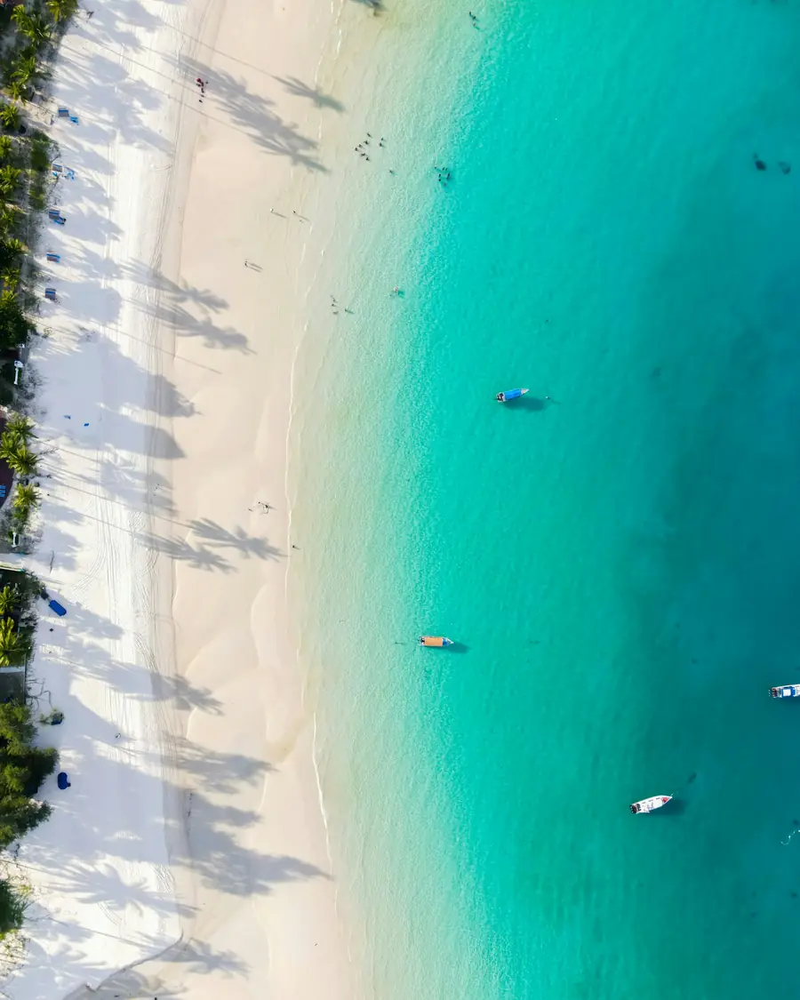
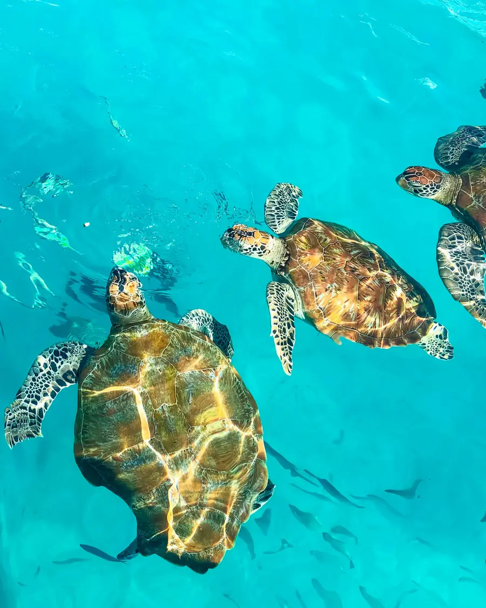

Konsep laman penginapan haziqbuilds
Penginapan yang elok, patut mudah ditemui.
Sebuah laman yang menyampaikan suasana dengan jelas, memudahkan tetamu mencari maklumat, dan membuka ruang untuk bertanya.
Anjung Nyiur ialah konsep rekaan. Tiada alamat, hos atau tempahan sebenar.
 Rujukan visual · bukan foto hartanah
Rujukan visual · bukan foto hartanah
Direka dengan tetamu dalam fikiran
Soalan tetamu, dijawab dengan tenang.
Rupa tempat, maklumat yang disediakan dan cara menghubungi hos patut mudah ditemui. Konsep ini menunjukkan bagaimana susunan yang ringkas boleh membantu tetamu membuat langkah seterusnya.
Bahasa visual
Suasana dahulu. Maklumat menyusul.
Imej membentuk nada laman, sementara kapsyen menerangkan dengan jujur apa yang sedang dilihat.



Semua imej ialah rujukan dari lokasi lain. Ia bukan foto penginapan atau bukti bahawa Anjung Nyiur berada di lokasi tersebut.
Prinsip reka bentuk
Setiap bahagian ada tugasnya.
Aliran yang ringkas membantu tetamu bergerak daripada melihat kepada bertanya.
Mulakan dengan suasana
Foto dan kapsyen memberi gambaran awal tanpa mengaburkan sumber imej.
Jadikan maklumat mudah dicari
Susun kandungan dalam bahasa ringkas yang selesa dibaca pada skrin kecil.
Jelaskan langkah seterusnya
Saluran pertanyaan sebenar pemilik boleh diletakkan dengan jelas pada laman mereka.
Tonton konsep
Lihat idea ini bergerak.
Video pendek ini mempersembahkan arah visual Anjung Nyiur menggunakan imej rujukan, bukan rakaman hartanah sebenar.
Muat turun video menegakUntuk pemilik penginapan
Biar laman anda mudahkan tetamu memilih.
Kongsikan jenis penginapan dan tujuan laman anda. Kita boleh mulakan dengan perbualan ringkas.
Minta sebut harga